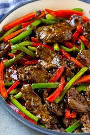

Recipe for a pepper steak so great, you will be begging for more

Description
Pepper steak is a classic Chinese-American dish consisting of sliced strips of steak that are seasoned with a hefty dose of freshly
ground pepper. The dish is believed to have origins in the Chinese province of Fujian, where pork was originally used instead of beef.
Ingredients
- Beef
- Soy Sauce
- Pepper(yellow, green and red)
- Onion
- Garlic
- Ginger
Steps to make
- Whisk sauce ingredients together in a bowl.
- Stir fry onion & peppers in a large skillet until tender. Transfer to a plate.
- Sear the beef strips (as per the recipe below) and cook just until browned.
- Add onion & peppers back to the skillet along with the sauce. Cook until thickened.